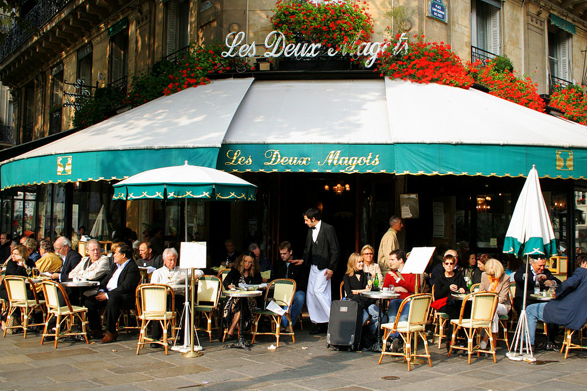
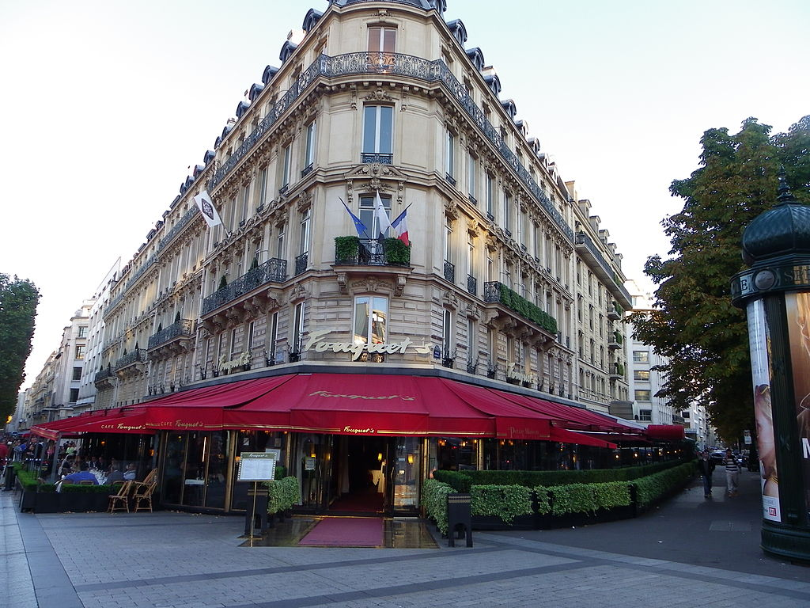
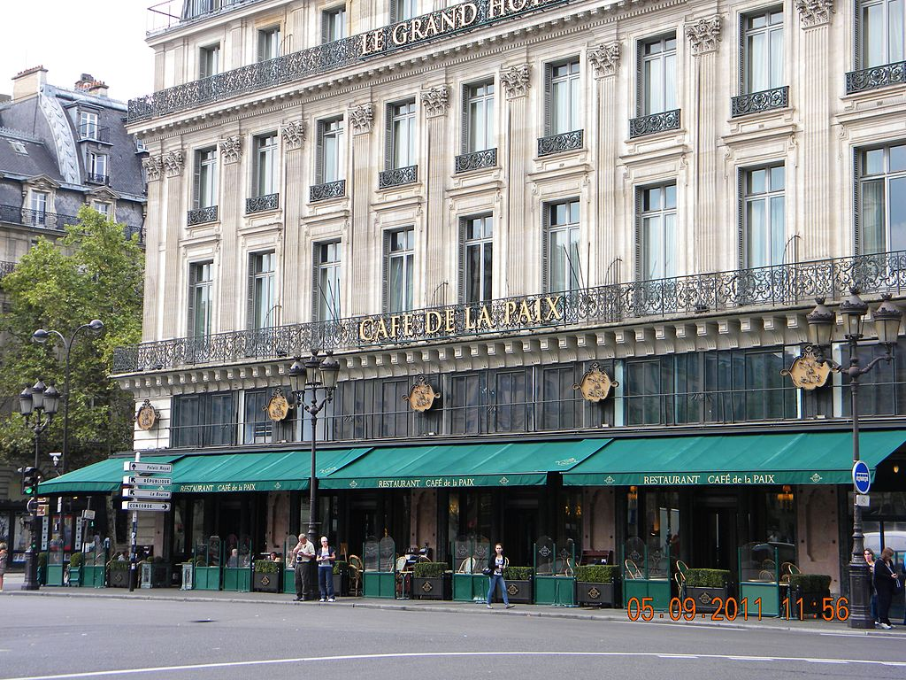
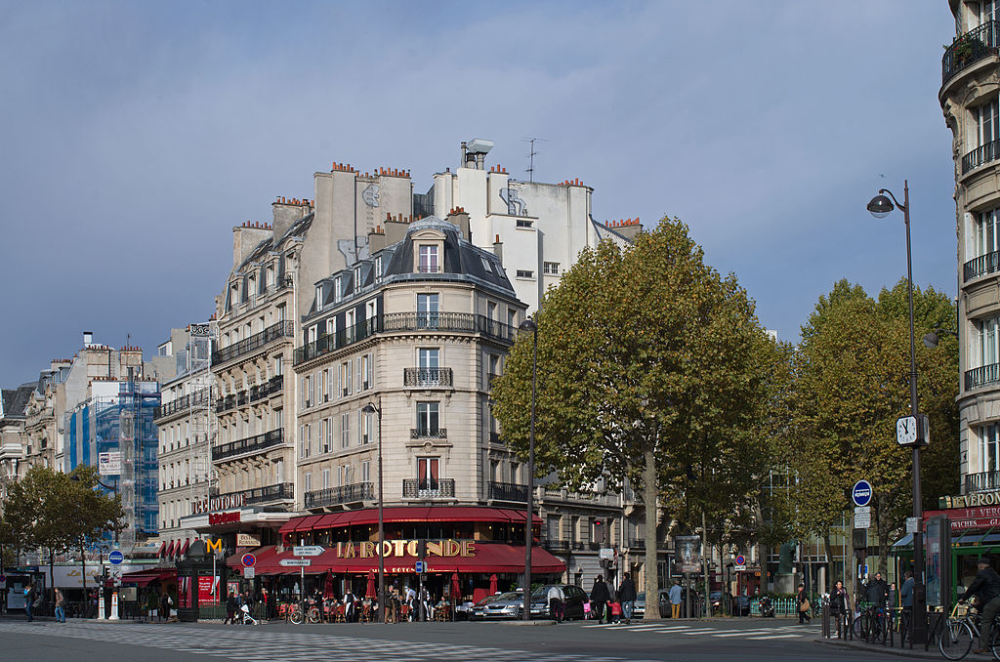

Traditional Parisian Cafes
Les Deux Magots
"Truly Parisian"
This is one of the most famous cafes in Paris. It got its reputation through its frequently visited artists and intellectual clientele. Famous writers like Ernest Hemingway, artists like Pablo Picaso, intellectuals, Simone de Beauvoir and Jean-Paul Sartre were among the frequent visitors. There are two figurines called "deux magots" can still be seen in the cafe. For a true parisian cafe, visit: 6, Place Saint-Germain de Prés, 75006 Paris France. It can be reached by métro line 4, Stop:Saint-Germain de Prés Bus:87, Stop:Bonaparte-Saint Germain. Click to find out more
Le Fouquet's
"Historic Brasserie"
This historic cafe founded in the year 1899. The terraces of the cafe can be reached by either avenue Champs-Elysées or avenue George V. It has attracted many artists, politicians and intellectuals. It hosts Gala dinner for the French Cézar awards. It is famous for its classic French cuisine. For traditional "high class brasserie" experience visit: 99, Avenue Champs-Elysées, 75008 Paris France. It can be reached by metro line 1, Stop:Geroge V Bus:43 Stop:Avenue George V. Click to find out more
Café de la paix
"Iconic"
This historic french cafe is situated in Paris Opéra. It is famous for its paintings, poems and frescoed interiors. The well known french writers such as Guy de Maupassant and Emile Zola were among the famous visitors to the cafe. The french government has declared the cafe as an historical site. To dine and have coffee with classic French art visit : 5, Place de l'Opéra, 75009 Paris, France. It can be easliy reached by metro line 4, Stop:Opéra Bus:20 Stop:Opéra. Click to find out more
La Rotonde
"Old Paris Feel"
Café de la Rotonde is situated in the Boulevard Montparnasse. It is a famous venue for intellectuals and artists. Pablo Picasso and Amedio Modigliani were frequent visitors of the cafe. Picasso and Alexandre Jacovlef potrayed the cafe in their paintings. The cafe is filled with artworks and still a famous gathering for artists, intellectuals and politicians. Visit la Rotonde : 105, Boulevard du Montparnasse, 75006 Paris, France. It can be reached by metro line 4, Stop:Vavin, Bus:91 Stop:Vavin. Click to find out more